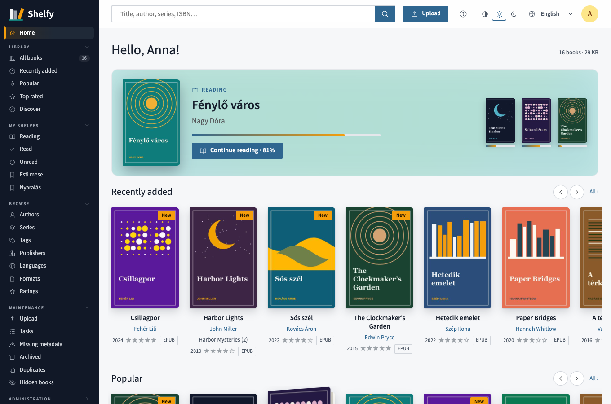
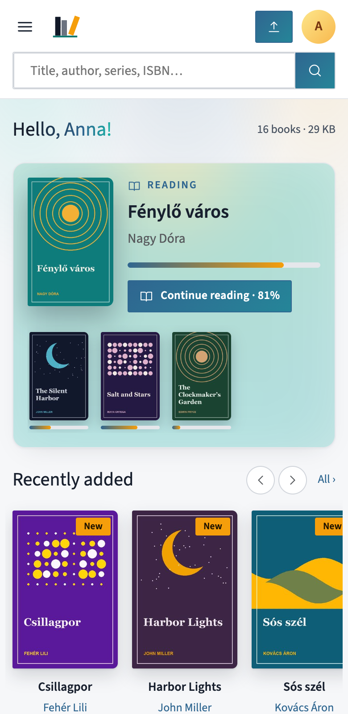
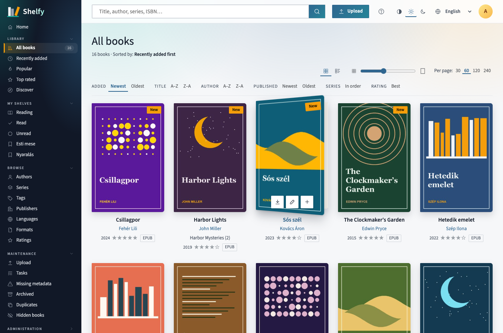
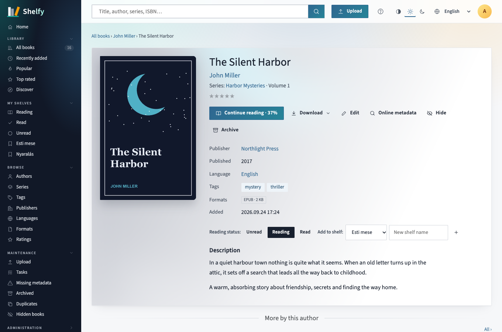
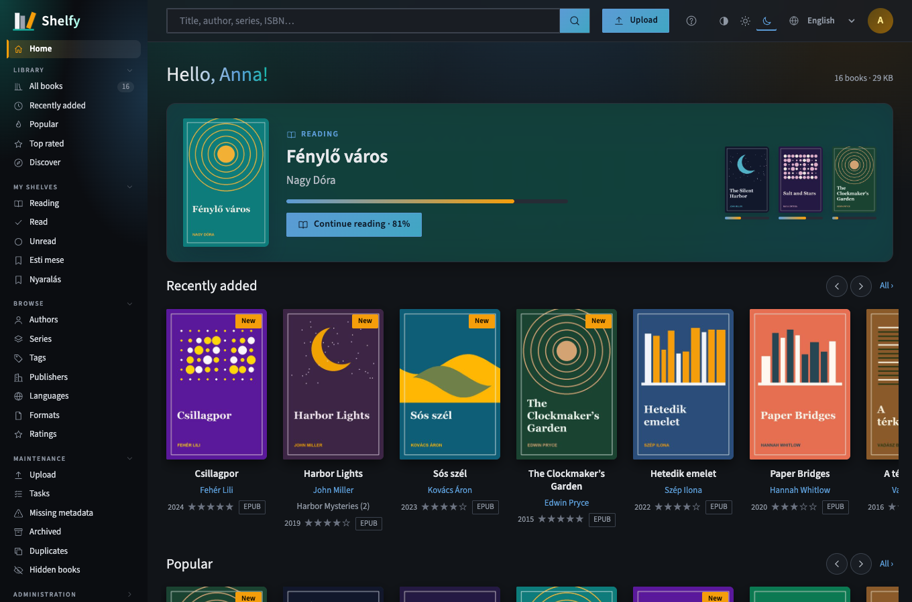

Upload and check
Drop in books in any format. Shelfy checks that each file is intact, whether you already have it, and what it can read from it.
Upload your books and Shelfy checks the files, fills in the details and the cover from the internet, and puts them in a searchable catalogue – to read in the browser or send to a Kindle.
One Docker container · runs on a NAS, a Raspberry Pi or any Linux box · your books stay at home


From dropping in a file to reading it on the sofa.
Drop in books in any format. Shelfy checks that each file is intact, whether you already have it, and what it can read from it.
Moly.hu, Google Books, Open Library, Hardcover and national libraries. You decide what to take over.
A built-in reader for EPUB and PDF with text settings, bookmarks and highlights. Pick up where you left off.
By e-mail or straight to your Amazon account, up to 200 MB. A missing Kindle format is created for you.
An e-ink friendly page with no JavaScript: browse and download right from the Kindle’s own browser.
Users, roles and permissions, personal shelves and reading status, optional guest browsing.
Authors, series, tags, publishers and languages; grid and list views; automatic categories.
Daily automatic backups, one-click restore, and an easy move to another machine.
The interface and the built-in help, with an in-app translation editor.
A responsive layout that installs as an app on iOS and Android.
Animated, quick, and equally at home in light and dark.
The home page opens with the book you are reading, its progress and a continue button.

Covers open like a book when you point at them, with quick buttons for download, Send to Kindle and edit.

Details, formats, reading status, shelves and the description, on a background tinted by the cover.

Each user picks their own theme and language.
No database to set up, no extra services. One container and one folder.
services: shelfy: image: ghcr.io/czdanika/shelfy:latest restart: unless-stopped ports: ["18200:8080"] volumes: - /volume1/docker/shelfy:/data environment: - TZ=Europe/Budapest - DEFAULT_LANGUAGE=en